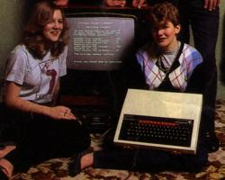
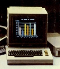
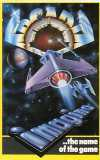

Unlike other youth-driven fads, such as skateboarding, computing was being viewed very differently. It was hard for anyone other than the bitterest luddites to disapprove of something that so clearly represented the future. Partly thanks to the backing of schools, parents felt compelled to encourage their children to take an interest in computers, or risk jeopardising their prospects in later life.

by some err...babes
It was the support of the schools that Sinclair was particularly interested in. In 1981 the BBC had announced that they were looking to commission a new computer for use in educational programmes. Sinclair was keen to win the tender, realising that such a seal of approval would make his computers the first choice for schools and families alike. Much to his chagrin though the contract went to Acorn, run by his old colleague Chris Curry. Their product, originally named Proton, was released as the BBC Micro and it immediately became the choice of schools and many middle-class families. For a while it looked as though Acorn had aced Sinclair, but then Clive played his trump card: the Spectrum.
The BBC Micro clearly offered a great deal more than the ZX81 - it was colour, it had sound, it had a decent keyboard, it had a whopping 32K of memory and it had the backing of the schools. It had one weakness though that Sinclair knew all about exploiting: its price. The BBC Model B was retailing at £399. Sinclair knew that if he could pitch his new computer at less than £200, Acorn would have no reply.
Research had been ongoing for some time into the development of a computer far more advanced than the Spectrum turned out to be. However, a swift answer was required to the questions being asked of Sinclair’s market position. In order to keep costs down it was ordered that the new machine should use as much of the ZX81’s technology as possible.
Plans for a Spectrum Super BASIC programming language were scrapped and an improved version of the old ZX BASIC was used instead. Rather than a ‘proper’ typewriter-style keyboard, the questionable ‘dead flesh’ model was employed, crammed with multiple functions. This design baffled computer novices and irritated more experienced users. Unlike previous Sinclair efforts, however, the Spectrum looked sophisticated. Where the BBC Micro was cumbersome, the Spectrum was small and sleek. The rubber keys seemed far more ergonomic than the stone tablets found on other computers and it was black, not a grim beige or a cheerless grey. It looked hi-tech like nothing had ever done before.

The ZX Spectrum was launched in April of 1982 in two forms: a 16K and a 48K model at £125 and £175 respectively. There were plenty of grumbles from the computer press about the keyboard, the processing speed and the single-key-press programming system, but it didn’t matter a jot. Sinclair were releasing a much-anticipated computer into a market too young have any real expectations. It simply didn’t matter that it wasn’t the polished all-rounder that the experts had been hoping for. It was cheap, colourful and it came from a man who had been marketed as the friendly, trustworthy face of new technology. It couldn’t fail.
As with all previous Sinclair products, the initial sales were by mail order only. And just like the ZX81, demand far exceeded supply. By July, there was a backlog of 30,000 orders. If that was not bad enough, Timex, who built the Spectrum, shut down in mid-July for a three-week annual holiday. By the time they returned, the backlog had hit 40,000 and angry letters were flooding into Sinclair as quickly as orders. It seems staggering that a company that had experienced serious supply problems in the past had not learnt from their mistakes - evidence if it was needed that, in certain areas, the business acumen of the Sinclair management team left a lot to be desired. There was such dissent that Clive himself was forced to make a personal apology to his customers and a promise to have all orders fulfilled by the end of September. Thankfully, the crisis was tempered by the fact that ZX81 sales had hardly been diminished by the release of the new computer.
The Spectrum was not released into a market bereft of competition. The BBC Micro was well established and several other computers were launched in the same year: the Dragon 32, the NewBrain from Grundy Business Systems, The Japanese Sord M5, the dismal Oric 1, the impressive Lynx and the Jupiter Ace, which was designed by Steven Vickers and Richard Aftwasser, who had been members of the Spectrum design team. Due to poor marketing, availability or quality, most of them sunk without a trace. All except one - the Commodore 64.

Compared to the Spectrum, the Commodore 64 was from the future. It used the Vic-20's full-size keyboard, it had 64K of memory, 16 colours with none of the Spectrum's attribute clash, sprite graphics, a 40 column screen and a built-in sound chip. Like all the Spectrum's other competitors its only weakness was its price - £350 on its launch in Britain. However, it would prove to be Sinclair's only real rival for the next five years, even if it never managed to dislodge the Spectrum from the number one spot. In America, its absolute dominance meant that no other manufacturer even got a look in and the way it was aggressively marketed almost put Atari out of business.
By the end of the year, the Spectrum's supply situation was still not completely under control, so Sinclair missed out on truly exploiting the 1982 Christmas period. To improve the computer's availability, the high street chain stores Boots, Curry’s and John Menzies were signed up as official retailers of Sinclair products. Some of these outlets were also beginning to stock the other computer-related product in demand - software.
Regardless of the belief of parents that computers in their homes would be used for educational purposes, the eventual use that nearly all of them were put to was games. Unlike the rigid forms of genre that were found in the arcades, home computers offered an opportunity to experiment with new ideas. There was an ‘anything goes’ attitude that was exhilarating and liberating. Furthermore, people were actually writing their own games on a wide scale for the first time. Whether it be a primitive BASIC program or a full-blown machine code arcade game, the excitement and sense of accomplishment was the same.
For the majority of people their only real contact with games had come from the arcades. With scant regard for licensing or copyright, flagrant imitations of these arcade classics began to appear for the Spectrum. This had the effect of demystifying the arcade; whatever these imposing cabinets from Atari and Williams could do could now be replicated in your living room. It’s no coincidence that the home computer boom marked the end of the arcade's golden age.
With no preconceptions of what to expect from their new machines, people were hungry to buy just about anything. There was no understanding of what was good or bad because there was nothing to compare it with. Quicksilva started it all off with Space Intruders, the first Spectrum game. Companies such as Silversoft and Bug Byte, who had established themselves in the ZX81 market, now turned their attentions to the Spectrum. By the end of the year there would be many new names on the scene, such as dK’tronics, Mikrogren, Artic and Hewson.

There was still a desperate shortage of games though. With no distribution system in place, most software companies were still making their sales via mail order or through their own shops. Most titles released in 1982 were attempts to convert well-known arcade games such as Galaxian or Scramble to the Spectrum. Others, such as Addictive’s Football Manager were bigger, better versions of ZX81 games. Hewson made a brave attempt at a flight simulator with Nightflite, while MC Lothlorien brought the wargame to the Spectrum with Warlord and Roman Empire. Adventures made an appearance too, with Artic most active, releasing four games in this year: Planet of Death, Ship of Doom, Inca Curse and Espionage Island.
One of the most significant releases of the year came at Christmas when a new company called Imagine released Arcadia. With Spectrum-owners crying out for a slick arcade shooter, this fitted the bill perfectly and catapulted Imagine towards their short-lived success.